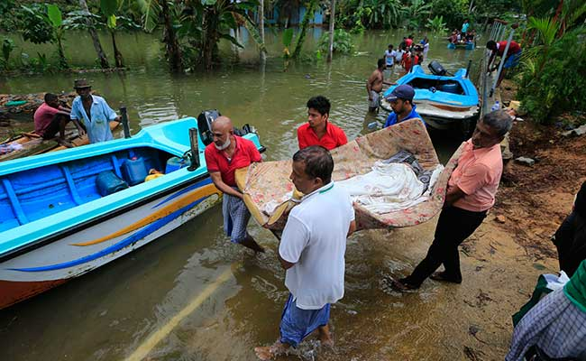

Agricultural biodiversity comprises all components of biodiversity important to food and agriculture. This includes all biodiversity in farming landscapes, not just farm animals and crop plants.Agricultural biodiversity thus takes in the genetic resources of crop varieties and farmed animal breeds (including fish) together with undomesticated (wild) resources in field, woodland, pasture and aquatic ecosystems, together with elements of biological diversity that secure ecosystem services such as the nutrient cycle, crop pest and disease regulation, pollination, conservation of local wildlife, protection of water resources, prevention of erosion, climate regulation and carbon fixation. The organisms referred to are used in farming, forestry and fishing in cultivation systems that in various ways and to varying degrees are integrated with natural ecosystems. Cultivated organisms interact with organisms in these natural ecosystems and depend on them to produce their output. Dependencies of this kind include soil fertility provided by soil organisms, pests being reduced by natural enemies and plants being pollinated by insects.
